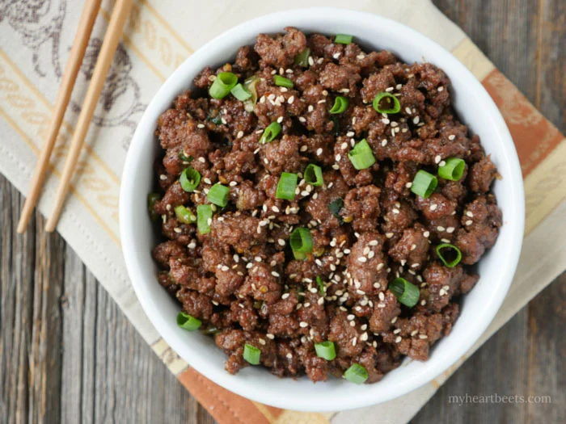

Beef Bulgogi

Description
If you really want to impress guests, this is the perfect dish.
This korean dish translates to 'fire meat'. These thin slices
are marinated in soy, ginger, and sesame oil, and grilled to
perfection. You can't miss with this savory beef dish!
Ingredients
Skirt steak
Soy sauce
Sugar
Green onions and garli
Sesami seeds
Sesame oil
Pepper
- Whisk soy sauce, green onion, sugar, garlic, sesame seeds, sesame oil, and pepper together in a bowl
- Place flank steak slices in a shallow dish and pour marinade over the top. Cover and refridgerate for at least an hour or overnight.
- Preheat an outdoor grill for high heat, and lightly oil the grate
- Quickly grill steak until charred, roughly one to two minutes each side